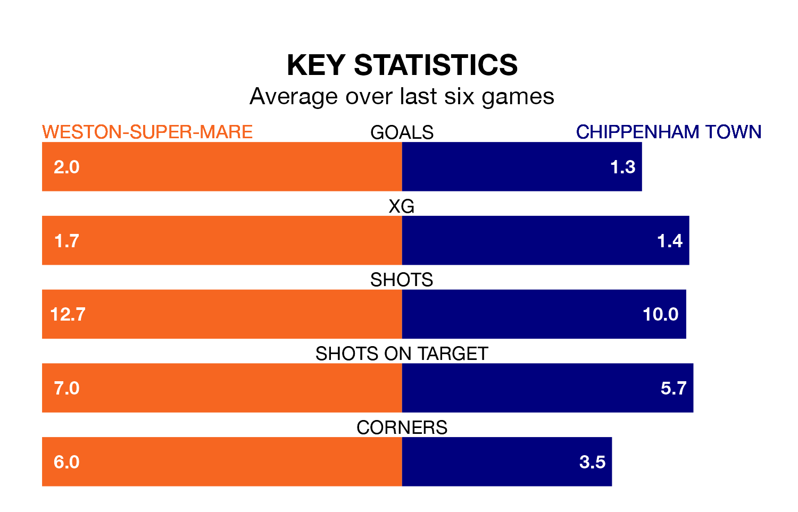

Weston-super-Mare host Chippenham Town in Tuesday's late match at the Woodspring Stadium looking to bounce back from defeat last time out in National League North and South.
Weston-super-Mare, who sit zero in the league after 21 games, fell to a 3-2 home defeat to Truro City on Saturday.
They face a Chippenham side who secured a draw in their last match, a 1-1 tie with Weymouth, and who sit zero in the table.
Weston-super-Mare are in reasonable form in National League North and South, with four wins and two losses from their last six games.
With a win and three draws over that period, Chippenham's form is much worse – they have taken six points from 18, compared to the hosts' 12.
With 32 goals in 21 games so far this season, Weston-super-Mare are scoring more than average in the league with 1.5 goals per game. But they are conceding more than average too, letting in 34 goals at a rate of 1.6 per game.
Town are also above average scorers, with 1.5 goals per game, compared to a league average of 1.4. They have also conceded 1.5 goals per game.
